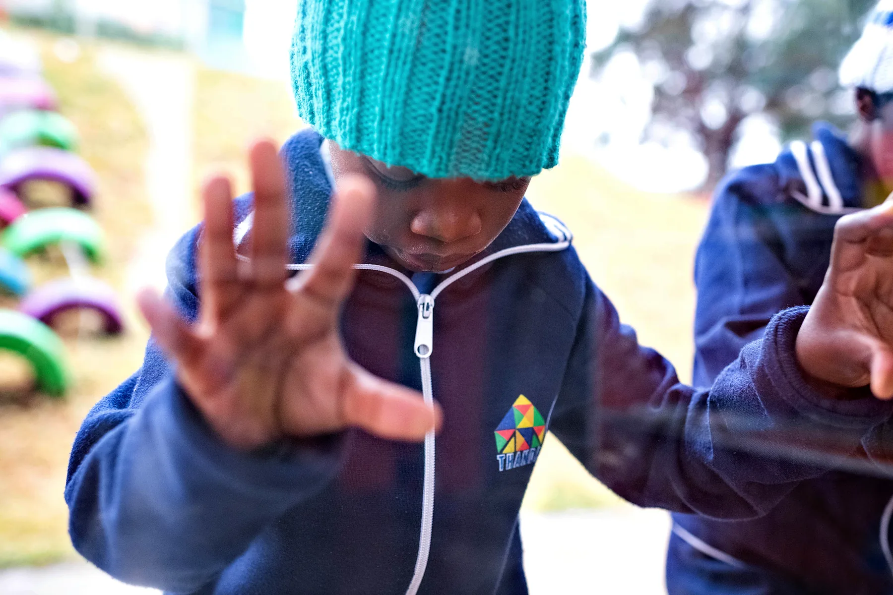
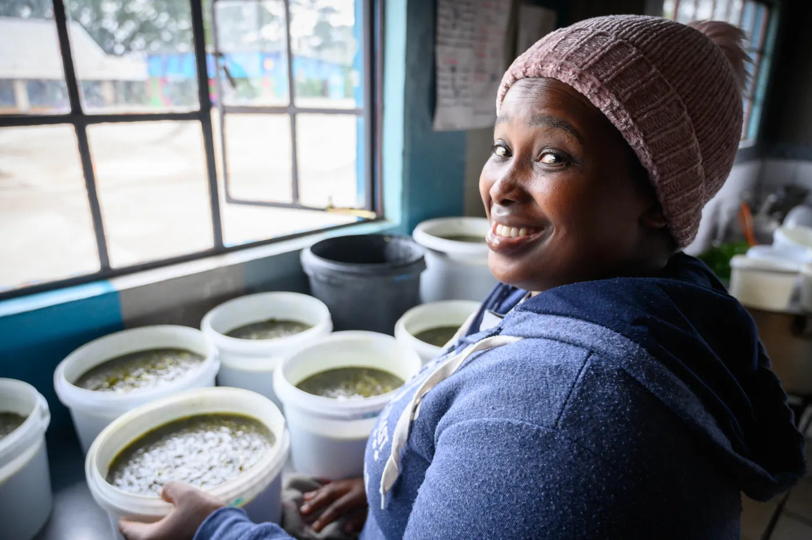
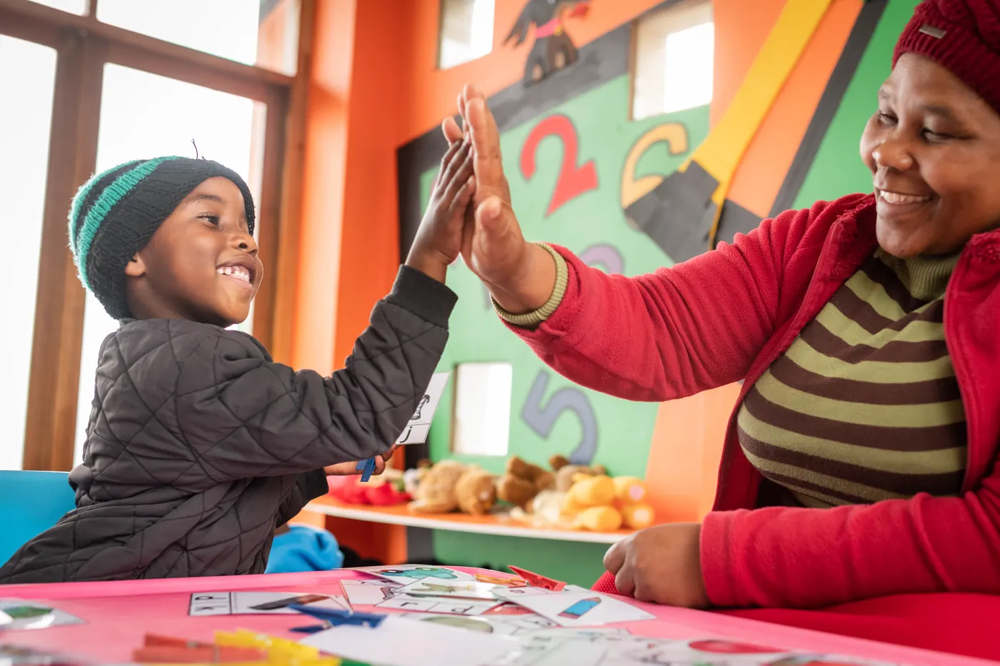
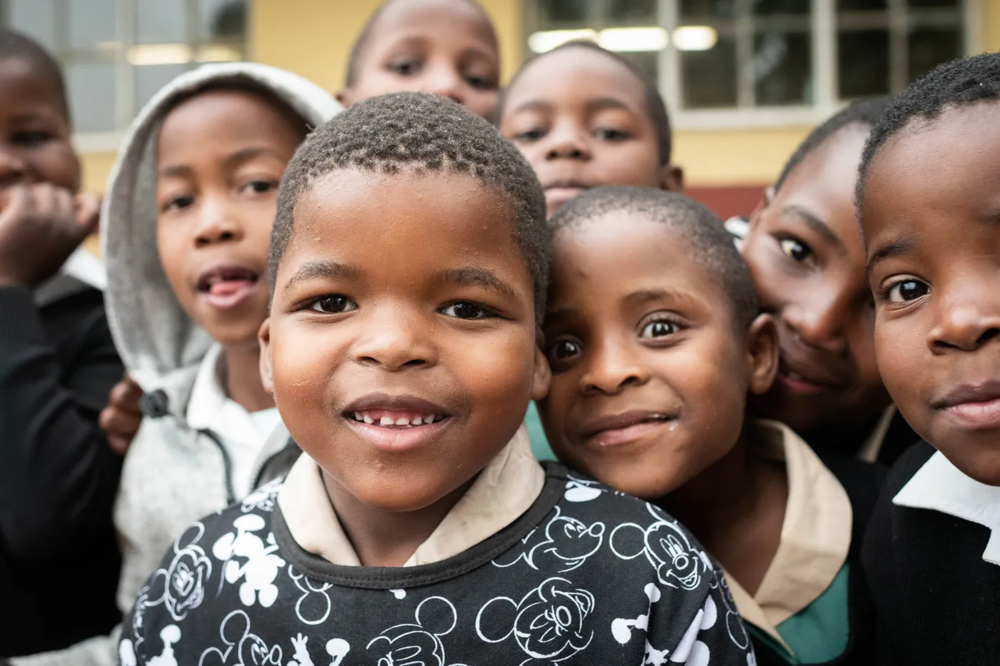
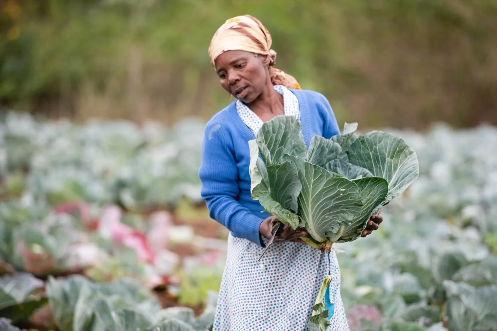
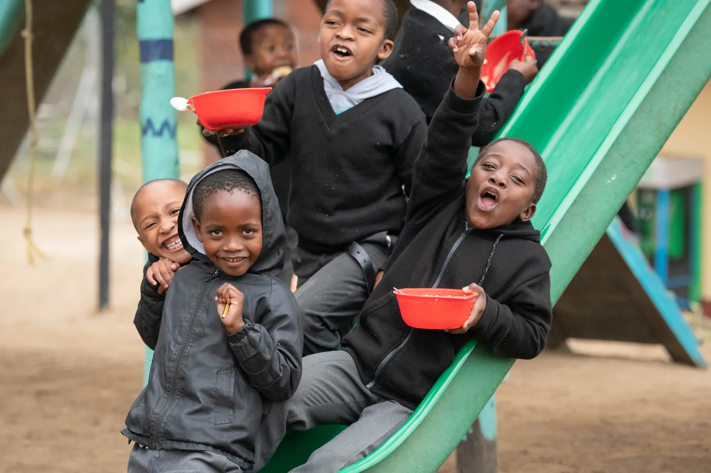
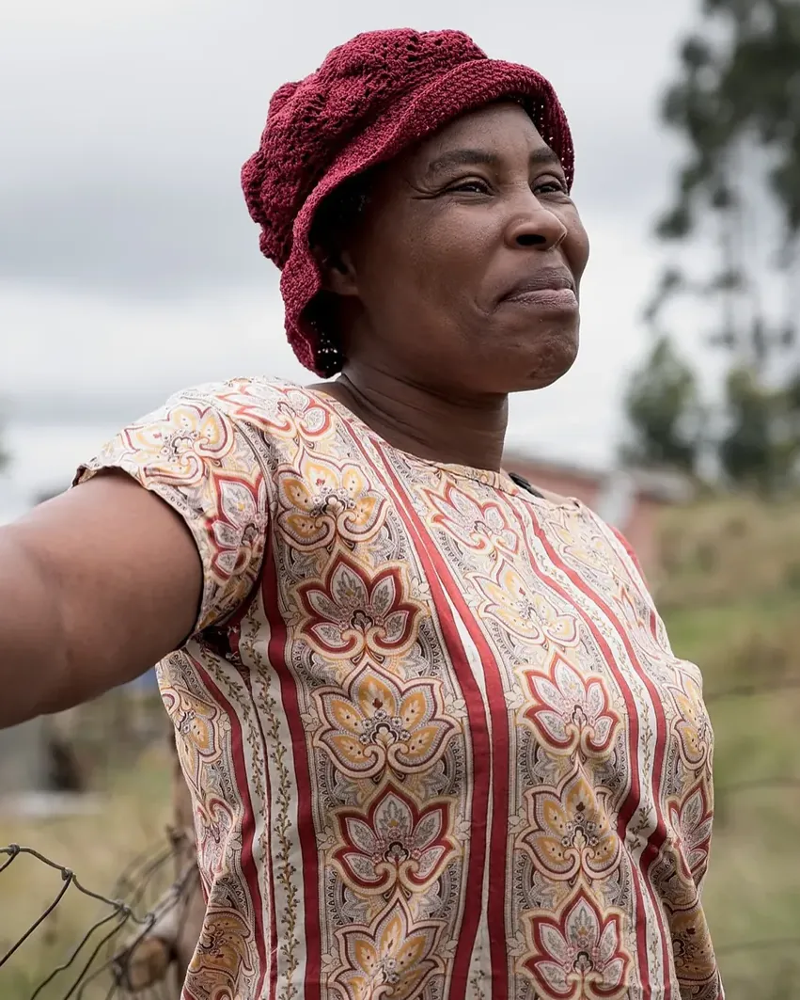

01
Early Childhood Development
Babies and preschoolers
Babies and preschoolers receive nurturing care and play-based learning, with stories, books and nutritious meals that build the foundations they need to start school ready.

Early learning, youth development and household support for children and families in rural Mtwalume, KwaZulu‑Natal.
296
preschoolers enrolled in Thanda's ECD programmes in 2025
230
children aged 5–8 in the Thandukwazi after-school enrichment programme in 2025
263
children aged 9–12 in the Siyazazi weekend programme in 2025
3,422
home visits completed with households in 2025
About this partner
Thanda works with children, young people and households in rural Mtwalume, KwaZulu-Natal, across early learning, youth development and neighbourhood support, helping every child reach their full potential.
Thanda was founded in 2008 to create opportunities for children growing up in rural Mtwalume. What began as an after-school programme has grown into a community organisation working with children from early childhood through adolescence, as well as their households and wider neighbourhoods. Over the years, we have expanded our programmes in response to the needs we see in the community, recognising that children's development is shaped by much more than what happens in the classroom. Supporting children also means strengthening the households and neighbourhoods around them.
Thanda's programmes support children from early childhood through adolescence: Early Childhood Development for babies and preschoolers, Thandukwazi after-school enrichment for children aged 5–8, Siyazazi weekend sessions for preteens aged 9–12, literacy initiatives that foster a love of reading, Girls' and Boys' Programmes for teens, and household support that works alongside guardians, through home visits and household gardens, to strengthen children's nutritional wellbeing and development.






01
Babies and preschoolers
Babies and preschoolers receive nurturing care and play-based learning, with stories, books and nutritious meals that build the foundations they need to start school ready.
02
Children aged 5–8
After school, children aged 5–8 take part in enrichment activities that build their literacy, confidence and life skills during the first years of primary school.
03
Preteens aged 9–12
On weekends, preteens take part in sessions that help them understand themselves, build confidence and practise making good decisions as they approach their teenage years.
04
Teenagers
Teenage girls and boys meet in safe spaces where they build leadership, resilience and life skills as they navigate adolescence.
05
Guardians and families
Thanda staff visit homes to share learning resources and support children's development. They also help families start household gardens, improve nutrition and find ways to earn an income.
Even Ground's support contributes to Thanda's Early Childhood Development and Child & Youth Development work. It helps give children in rural Mtwalume access to quality early learning, nutritious meals, books and nurturing support during the critical early years of development and beyond.
A story from Thanda

In KwaNdelu, determined and community-minded Thembi Ntuli is one of many women shaping a stronger future through Thanda's farming program. What began as a way to grow food and support her children's early learning has become a source of confidence and connection as she shares her skills with new farmers. While Thembi tends her garden, her children learn and grow in Thanda's ECD and literacy programs, creating a circle of care that supports the whole family.
Through Thanda's farming, ECD, and literacy programs, Thembi and her children enter an ecosystem of support that builds skills and stability at home. As Thembi continues to grow food and earn an income, her children gain a strong early learning foundation. With time, Thembi begins sharing her farming knowledge with other parents, extending the same care she once received.
Support Even Ground
Donations are made to Even Ground and help fund community-led programs like Thanda's across South Africa. Even Ground is a US 501(c)(3); contributions are tax-deductible.